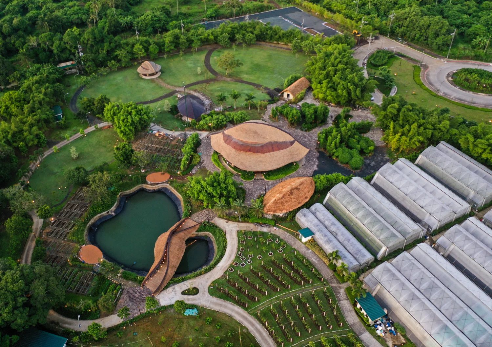
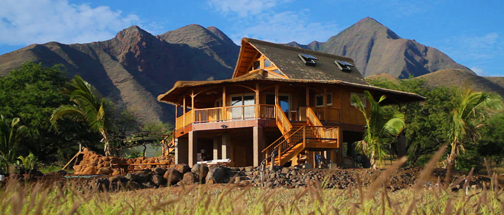
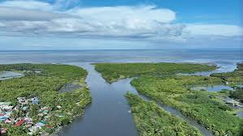

Los Baños, Laguna 2055
An interactive postcard recovered from the mid-21st century. Explore how Los Baños transformed into an interconnected, vertical eco-city where human shelter and Mount Makiling's forest corridors coexist as one living system.

Three Core Pillars of the 2055 Transformation
Based directly on the letter from 2055: How vertical living, lakeshore wetlands, and clean transit work together.
Healthy Long Lives, Shaded Corridors & Bayanihan Assemblies
People live healthier, longer lives (averaging 82 years) breathing clean mountain air, walking along shaded tree corridors, eating fresh vegetables from community gardens, and sharing municipal water cooperatively through purok Bayanihan assemblies.

Bamboo Homes, Shoreline Wetlands & 85% Clean Grid
Rather than hot concrete sprawl, homes are built from sturdy local bamboo and low-carbon materials cooled naturally by mountain breezes. Shoreline wetlands filter domestic runoff into Laguna de Bay, and 85% of our electricity comes from clean geothermal and rooftop solar microgrids.

Living as One System: Balancing Needs with Watershed Capacity
High-tech gadgets alone could never stop climate disasters. Los Baños survived because Human Ecology taught us to treat human communities, engineered buildings, and natural forests as one living system—balancing our daily consumption with what the watershed can naturally regenerate.